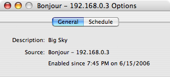
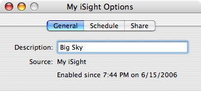
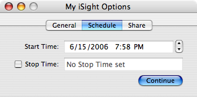
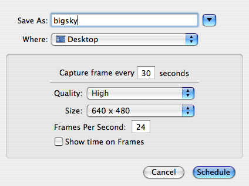
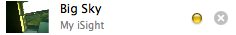
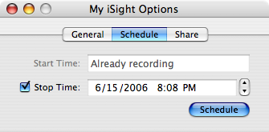

Camera Options in Gawker
In addition to being able to view and record, each camera in Gawker has additional features that can be accessed through the "More Options..." item in the Gear/Camera menu or through the "More..." button on the Camera window. The options available for a specific camera will vary depending on whether the camera is connected directly to your computer or it is a camera you have connected to over a network.

For each camera, you have at least the two tabs shown above: General and Schedule. General shows you basic information about the camera, such as its description, source, and enable time. Schedule allows you to specify when this camera should automatically start and/or stop recording a movie. For cameras that are directly attached to your computer, the Options window will look like this:

You can change the description of a camera that is directly attached to you computer. This description is what will appear in your camera
list for that camera, as well as in the camera list for users that have connected to your camera over the internet. Use it to describe
what it is your camera is Gawking at.
Also notice that for a locally connected camera there is a "Share" tab. This tab contains settings relevant to sharing your camera over
the internet and your local network. For more information on this tab, please refer to Using Gawker to Share your Camera.
Schedule
The schedule tab allows you to specify a start and stop time for recording a movie with the given camera. Simply select the start time
for your movie and if you would like to specify a stop time, check the "Stop Time" box which will then allow you to select a stop time.

Click the "Continue" button to select recording options for your movie. For more information on these options, refer to Using Gawker to Record a Movie as these options are the same as those for simply recording a movie.

Once you have chosen the desired options, click "Schedule" to set the camera to record at the specified times. Once your camera is scheduled to start recording in the future, it will show up in the camera list with a yellow dot next to the enable/disable button.

If this camera is already recording a movie, you can specify a stop time for the current recording.

Choose the stop time and click the "Schedule" button to set the stop time.
If at any point you change your mind about what you have scheduled, simply go to the "Schedule" tab and if events are scheduled, you can
unschedule them by clicking "Unschedule".
See also
Gawker Basics
Using Gawker to Record a Movie
Using Gawker to Share your Camera
Using Gawker to Combine Cameras